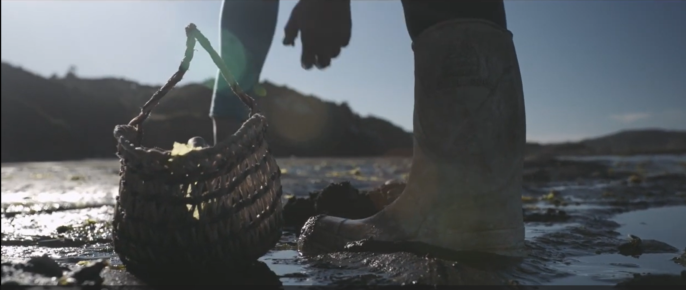

Sobre el Proyecto
El proyecto “Talleres de Salvaguardia del Patrimonio Inmaterial Portado por Mujeres de la Comuna de Quinchao” tuvo como propósito fortalecer la participación comunitaria, promover la valoración del patrimonio cultural inmaterial y contribuir a la transmisión de saberes territoriales presentes en las comunidades insulares de la comuna de Quinchao en la Isla de Chiloé, Chile.
En el marco de esta iniciativa se desarrollaron tres talleres participativos orientados al rescate de conocimientos tradicionales, la memoria oral, la sostenibilidad ambiental y la innovación en las prácticas artesanales locales. Las actividades permitieron generar espacios de encuentro, aprendizaje e intercambio de experiencias entre mujeres portadoras de saberes, fortaleciendo la identidad cultural y la transmisión intergeneracional de conocimientos. Los talleres se realizaron en la Biblioteca Pública de la Isla Achao, en la Junta de Vecinos Bosque Verde de la Isla Achao y en la Junta de Vecinos de la Isla Caguach.


Cultoras Participantes

Uberlina Calbuante
Uberlina Calbuante es cultora y portadora de la tradición del tejido artesanal en Quelgo, comuna de Quinchao, Archipiélago de Chiloé. A través de su trabajo preserva conocimientos transmitidos entre generaciones, contribuyendo a la conservación del patrimonio cultural inmaterial del territorio. Su labor refleja la identidad, la memoria y los saberes ancestrales de las comunidades chilotas.